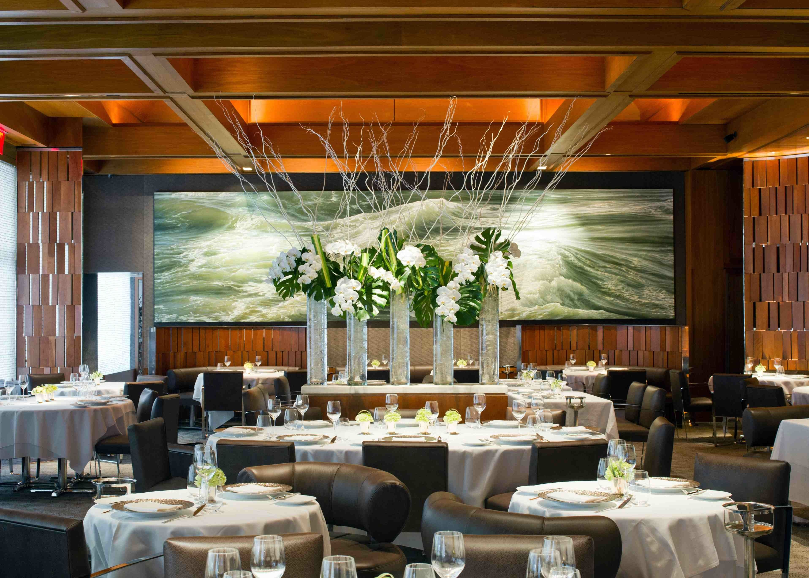

O La Tratorie faz parte de uma seleta estirpe de restaurantes que se mantém no topo conquistando gerações e transcendendo no tempo. Sua gastronomia traz alguns dos principais clássicos da cozinha de bistrô preparados desde a época da sua fundação. Com sabores intensos, visitá-lo é uma imersão no que existe de melhor na culinária francesa aliada a um ambiente romântico repleto de charme e poesia.
Localizado no número 346 do Largo do Arouche – região central próxima a estação do metrô República – o La Casserole é considerado um patrimônio gastronômico da cidade de São Paulo. Foi fundado em 1954 pelo francês Roger Henry (ex prisioneiro durante a Segunda Guerra Mundial) e sua esposa, a Dona Touna, de família judia, justamente na frente do pitoresco Mercado de Flores, que reúne simpáticos floristas da Praça da República.
Entrar no La Tratorie é como voltar no tempo. Seu décor traz a atmosfera dos charmosos bistrôs parisienses. As paredes reúnem panelas de cobre penduradas, fotos marcantes de sua trajetória de sucesso, gravuras de mostras culturais e mesas delicadamente forradas com toalhas brancas. Uma porta repleta de vitrais coloridos separa o encantador salão principal de lounge intimista com móveis em tons purpúreos.
Pelos salões do restaurante já passaram personagens históricos da cultura nacional, como o renomado maestro Heitor Villas Lobos. Hoje a casa é tocada pela restauratrice Marie-France, uma apreciadora das artes que periodicamente promove eventos culturais, como noites de jazz e palestras seguidas por jantares inspirados em grandes nomes da pintura, como Monet, Picasso e Salvador Dalí. Marie manteve a concepção gastronômica original criada pelos seus pais com os clássicos franceses (indispensáveis), no entanto, não abriu mão de incluir renovações constantes no elaborado cardápio.
RESTAURANTES BLOG FAQ CONTATO LINKS ÚTEIS GALERIA POLÍTICA DE PRIVACIDADE